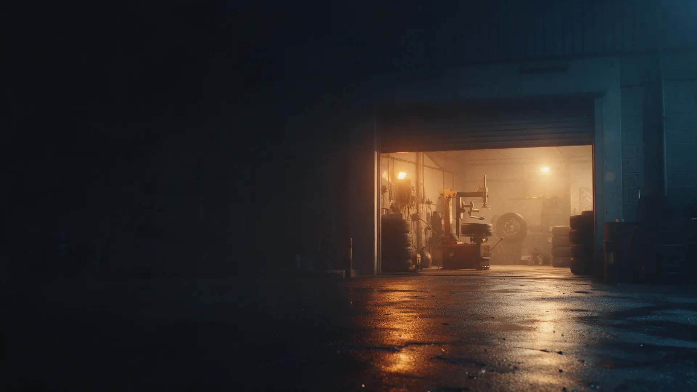
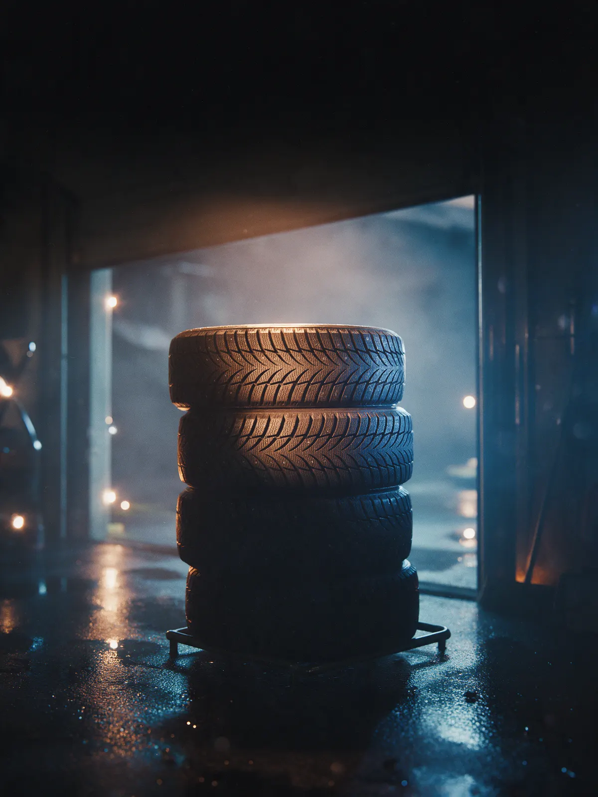
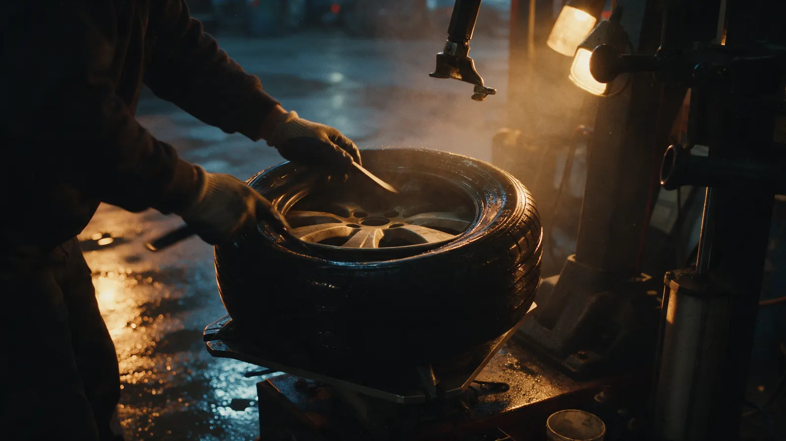

Шиномонтаж · Калуга
Шиномонтаж в Калуге по записи – полная переобувка за 25 минут
Рейтинг 5,0 на Яндекс.Картах. Принимаем ровно к назначенному времени, затягиваем колёса динамометрическим ключом, без скрытых доплат.
- Рейтинг 5,0 на Яндекс.Картах
- Переобувка комплекта – от 1300 ₽
- Без скрытых доплат

Что входит в переобувку
Входит
- Снять и поставить четыре колеса
- Перебортировка
- Балансировка каждого колеса
- Затяжка динамометрическим ключом
- Проверка давления
Отдельно, если нужно
- Правка дисков – отдельной строкой, 700 ₽
- Замена вентилей и датчиков
- Сезонное хранение – уточняйте
Услуги и цены
Цены из вашей карточки на Яндекс.Картах. Мини комплекс – для лёгких работ, полный – со снятием и балансировкой.
Шиномонтаж
- Мини комплекслёгкие работы без полного разбораот 1 300 ₽
- Полный комплексснять, перебортировать, отбалансировать, поставитьот 1 700 ₽
- Ремонт проколажгут или заплатка изнутриуточнить
Диски и балансировка
- Правка дисковна профессиональном оборудовании700 ₽
- Балансировка колёсуточнить
- Датчики давлениязамена и обучениеуточнить
Никаких скрытых доплат и навязанных услуг – это подтверждают отзывы на Яндекс.Картах.
Как проходит
- 01
Записались и выбрали время
В WhatsApp или Telegram, за минуту.
- 02
Приехали – принимаем вовремя
Машину приняли ровно к назначенному времени – из отзыва.
- 03
Мастер осматривает колёса
Состояние шин говорим честно, до работы.
- 04
Отдаём машину и чек
Полная переобувка – около 25 минут.


Что подтверждают отзывы
Принимаем по записи, без очереди
«машину приняли ровно в назначенное время» – из отзыва на Картах.
Динамометрический ключ
«болты затянули с правильным моментом, без „на глаз“».
Без скрытых доплат
«никаких скрытых доплат и навязанных услуг».
Честно про состояние шин
Предупредим про подсыхание боковины до работы.
Отзывы с Яндекс.Карт
«Посетил этот шиномонтаж для сезонной замены резины и остался по-настоящему впечатлён уровнем сервиса. Приехал по записи — всё чётко: машину приняли ровно в назначенное время, без задержек и нервозной суеты. Мастер сразу провёл предварительный осмотр колёс и дисков, рассказал про состояние шин: честно отметил, что на одной покрышке уже заметно подсыхание боковины — это важный нюанс, о котором я раньше не задумывался. Сразу чувствуется, что работают не «на поток», а реально смотрят на состояние колёс. Использовали динамометрический ключ — для меня это показатель профессионализма: болты затянули с правильным моментом, без «на глаз». Цены адекватные, никаких скрытых доплат или навязывания лишних услуг.»
Дмитрий Прокофьев · 14 сентября
«Замечательный сервис и внимательные мастера! Недавно обратилась сюда сменить резину перед зимним сезоном, осталась довольна работой сотрудников шиномонтажа. Всё сделали быстро, аккуратно и качественно. Цены вполне адекватные, никаких скрытых доплат и навязанных услуг. Теперь смело рекомендую своим знакомым именно этот шиномонтаж! Спасибо большое за отличную работу.»
Кристина Аржанкова · 7 декабря 2025
«Отличное место, быстро качественно, Запись корректная,приехал к назначенному времени, сразу взяли в работу, за 25 минут полная переобувка. Рекомендую. Цены приемлемые.»
Александр Ру · 8 ноября
Отзывы с карточки на Яндекс.Картах, без правок.
Частые вопросы
Сколько длится переобувка?
Около 25 минут на полный комплект – по отзыву на Яндекс.Картах.
Сколько стоит переобувка?
Мини комплекс – от 1300 ₽, полный – от 1700 ₽. Точную сумму назовут до начала работ.
Делаете правку дисков?
Да, на профессиональном оборудовании – 700 ₽.
Можно без записи?
Можно, но по записи принимаем ровно к вашему времени – без ожидания.
Запишитесь к своему времени
- Адрес
- Дальний пер., 2/356, Калуга
- Часы
- Каждый день 10:00–20:00
- Телефон
- +7 (915) 894-20-80